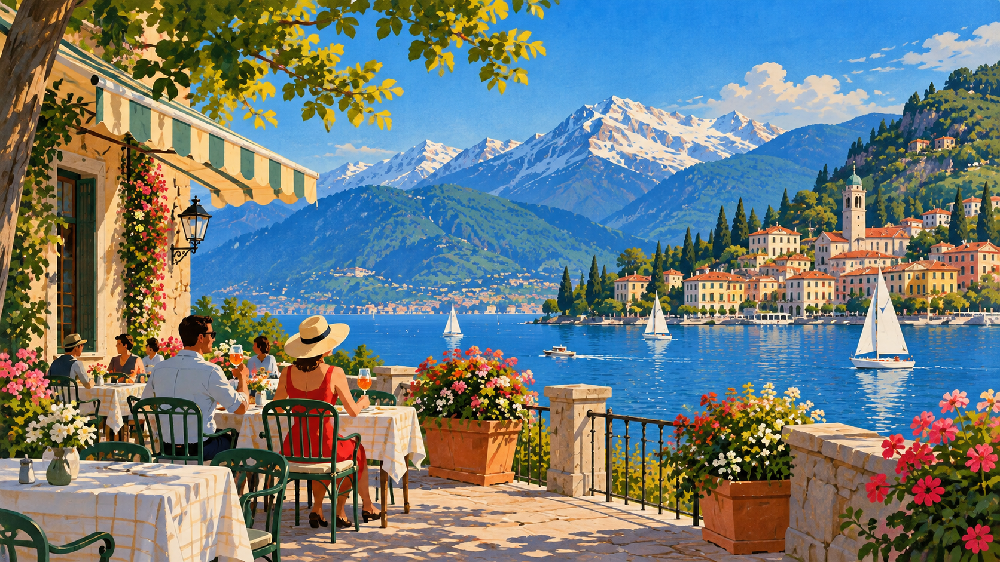

The tissue guard
Old illustrated plate books protect each painting with a leaf of glassine, printed with the plate's own caption, before you ever see the picture underneath. Scroll to lift it away.

Plate III
Café terrace, evening light
A field note, held under glassine until the page asks to see it.
After
The plate remains. The guard rests where it was set down.